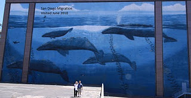

After chasing down pictures of yachts we knew the next wall would be easier to find and take a picture of since it would not be moving. We just saw it a little earlier than expected.
We started Father’s day with a Segway tour of San Diego which was a ton of fun. While on the tour it seemed some of the buildings were familiar. I had not been to that part of town before but I did a lot of looking around in Google street view looking for the wall and while we waited at a stop light I turned to see Life Size Blue Whales right there. It’s really a great painting. It was funny that our tour guide, who goes by that spot all the time, did not even know if was there.
We did not have our camera with us so we had to come back to get the picture which is too bad because it would have been great to get the picture while on the Segways. The size of this wall makes it stunning and while many walls have deteriorated this one is in great shape.